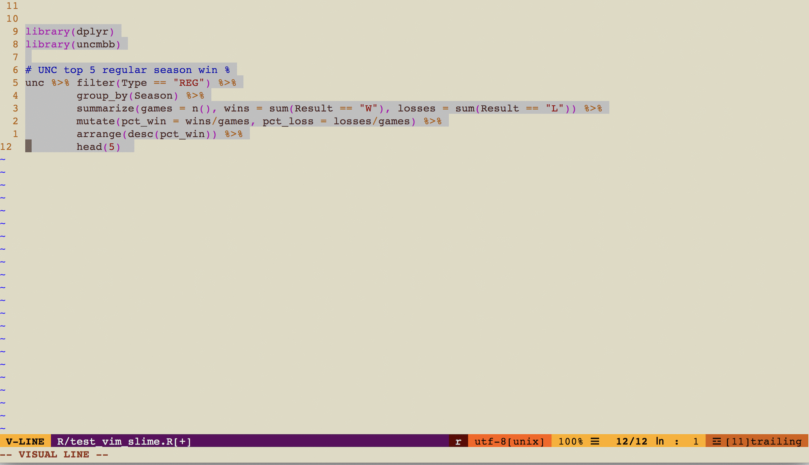

As much as I love using RStudio for everything1, there are times when I can’t really use it, i.e., for some projects at work in which I need to log in to some servers and do work there (i.e., on the server side). Using RStudio server would do it, I think, but it’s not an option at the moment. For a long time, I’ve been trying to establish a good working data analysis workflow that I can follow in those situations.
Vim is my server side editor of choice. I’m not a Vim expert by no means, but ever since I started using it (it’s been almost 4 years), it fit me, and it’s been my editor of choice, especially when working on some remote servers2. I would open up several terminal window tabs, i.e. one for command line, one for R session, one for file editing (using Vim), one for hive shell, etc..Establishing an effective data analysis workflow came down to being able to use Vim more seamlessly with those other tools that I use everyday.
After several days of browsing, reading, and trying out, I finally settled down with this particular set-up and so far I’m pretty happy with it. This post is a quick overview of the set-up as a reference for myself and potentially others who’s facing a similar situation. This is one of those things that I wish I had perfected while I was still at school, just like many other things that I’ve written about before here.
- Vim and .vimrc
I searched web for information regarding Vim set up for data analysis, especially using R. Very quickly, I ran into Nvim-R, a Vim plugin to edit R code. I tried it for a couple of days, but ended up dropping it, because as much as I love R, I had to use some other tools with Vim, and I needed more general solution, not an R-specific solution.
But that turned out to be my introduction to the world of Vim plugins! I spent a couple of nights searching for cool Vim plugins, sometimes for the ones that are not necessarily related to doing data analysis. But it was so fun trying out a variety of Vim plugins. This is also when I started using Vim plugin manager as well, which makes installing/uninstalling Vim plugins simple and easy. I tried only one such manager, Vundle, and have been using it ever since.
Now to use a Vim plugin manager and several plugins, I started adding more stuffs in my .vimrc file, which is like a .Rprofile file (or .bashrc). It contains many settings for Vim, i.e., plugins related specific setting as well as more general settings. And boy are there tons of cool stuffs you can do with these settings! Of the many general settings, one of my favorite is insert mode mapping of “jj” (two strokes of the key j) to esc key, so that I don’t have to reach for the esc key while typing, and instead just type jj to get back to normal mode3. Like I said, I spent several couple of nights trying out different settings and plugins, and I had to resist the urge to play with new settings and plugins. It’s like trying to perfect how your blog looks like, and I had to try hard not to spend too much time perfecting my .vimrc file, i.e., my Vim setup.
- Vim-slime
Then I ran into Vim-slime, another Vim plugin that allows you to send lines of code from one window to another, thus eliminating the need for constant copying from a text file (e.g., data analysis script file) and pasting on R session, for example. It’s the equivalence of selection and cmd-enter in RStudio to run select lines of code.
With Vim-slime, I can send select lines of codes from one terminal window tab to another, be it an R console, Python console, Hive shell, etc. So it provided me with a more general solution than Nvim-R, which is still a great R specific plugin.
- Screen
Last but not least, I had to come up with a way to keep my running terminal sessions even after server connection is lost. I have several meetings a day, and sometimes I lose my server connection while walking to/from a meeting. I already knew and have been using screen for that purpose, and it so happens that Vim-slime works great with screen. By default, a chunk of code I want to run is sent to a screen session, and I learned how to name a screen session too.
I also ran into tmux, which is a screen multiplexer, similar to GNU screen. Essentially just like screen, it lets you work on multiple tabs within one terminal window without losing them even after your server connection is lost. It looked very interesting and useful, but unfortunately, it needed to be installed on the server side, and to make things worse, the server was missing one of the required dependencies, so I decided to drop tmux from my target list.
So putting these together, here’s what I typically do first thing in the morning at work. There’s probably a better way to do this still, but until I figure out how to, I’m happy with the current set up.
- Open terminal and ssh into a server. Open the script file, e.g., an R script, that I need to work on. Let’s call this a “source” tab.
- Open another tab in the same terminal window (cmd-T) and ssh into the same server. Start a named screen session by
screen -S R.
$screen -S RThis will open a screen sesion whose name is “R”. Once in it, start an R shell, (or python, hive, etc.), and let’s call it a “console” tab. I find it helpful to name each of these console tabs with corresponding tool name, e.g., “hive” when using hive shell there, “python” when using python shell there, and “R” when using R shell there, etc..
- When working on some code chunks, test them by sending the code chunk from the “source” tab (from #1) to the “console” tab (from #2). Selecting code chunks in visual mode in Vim and sending them to the console screen by
using Vim-slime takes some getting used to, but it’s been worth it :)

When code chunks are sent for the first time in a session, Vim-slime asks for the destination screen session name, and I entered R, which was my screen session name from step 2 above. It then asks for screen window name, and I just leave it as is (default 0).